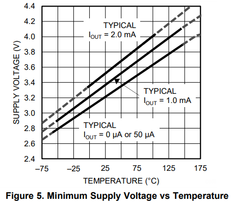
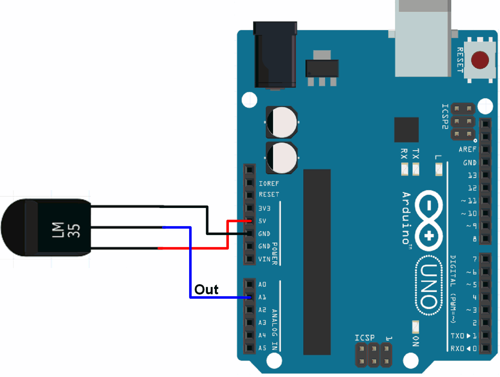

A continuaci´tenim un codi general que pit servir per moltissimies coses diferents i totes relacionades amb la capacitat que té l'arduino de llegir de 0 a 1023 en una entrada analògica, si fos un ESP32-S3 llegiria de 0 a 4095 i si fos un ADS1115 legiria de 0 a 65536. Perque?
Els microxips i els microcontroladors tenen transistors i els transistors nomes poden fer una cosa encendres o apagarse, Es a dir 0 o 1 i cada bit és un 0 o un 1. Si tenim 10 bits en un ADC (analog digital converter) significa que té 210 combinacions de 0 i 1 es a dir 1024 nivells diferents que numericament van desde el 0 al 1023
Si tenim 12 bits en un ADC (analog digital converter) significa que té 212 combinacions de 0 i 1 es a dir 4095 nivells diferents que numericament van desde el 0 al 4095. Ara justifiquem el numero 65536 seria correcte s fos 216 pero en el datasheet para d'un nivell maxim de 8000h (numero hexadecimal que correspon a 32768) es a dir, són 15 bits utilitzables. Sempre s'ha de comprovar el datasheet o fulla de caracteristiques del fabricant
int valorADC=0; // Int significa integer o valor enter numèric (Float seria floating point number o decimal, char
seria un character o caracter de lletra de l'alfabet, string seria una cadena de caracters o paraula, etc. El més
important es que la primera paraula difeneix el tipus de variable que tenim, en aaquest cas enter). "valor_ADC" és
un nom que triem nosaltres per definir una variable, es a dir, un valor que no serà constant i que té inicialment
un valor 0, si posem int "valor_ADC" es a dir no posem que és = a 0 per defecte hauria de donar valor 0. s jo volgues posar
un potenciometra posaria pot i si volgues posar LDR posaria ldr, etc. Sempre la primera linia és la definició de les
variables. A vegades avan de la primera linia necessitem carregar bblioteques.
voidsetup(){ // Sempreh ha un setup o funció de configuració del microcontrolador en llenguatge arduino que té un
parentesis buit perqué no té cao arametre o argument del qual depengui en molts casos. La paraula void seria l'equivalent
a la paraula function en JavaScript. També es diu void setup en Processing perquè deriva de processing en llenguatge
arduino. Perque posem un parentesis? POsem una clau per agrupar totes les instruccions que volem executar una sola vegada
perquè setup s'executa nomes al principi cuan arranquem o encenem l'arduino o microcontrolador.
Serial.begun(9600); //9600 en Arduino //115200 en S3 // Seria s''escriu amb mayuscules perquè és una classe que és una part important
del codi arduino que antigament era una clase de processing i té un metode que es fa servir amb la sintaxi del punt, dot
syntax que sonsisteix en que jo quan escric un punt estic aplicant un mètode normalment a un objecte d'una clase, com aquí.
El mètode begin connecta per el cable sèrie l'ordinador amb l'Arduino i té només un parametre que es un numero enter que
correspon a la velocitat en bits/segon. Pel cas de l'Arduino uno 9600/segon o bauds, mentres que en ESP32-S2 són 115200/segon
o bauds "Serial.begin8115200);". És molt important posar un ; en cada instrucció
per informar que ja ha acabat.
}
void loop(){ // És una funció que repeteix sense parar fins que desconecto isicament o poso un codi per aturar-ho
valor_ADC=analogRead(A0); //34 en S3 // La variable que ham creat abans que era 0 inicialment ara canviarà perquè la
instucció analogRead el que fa és llegir valors entre 0 i 1023 si és un Arduino uno
valor_ADC=analogRead(34);// La variable de valor 0 ara serà un valor entre 0 i 4095 perquè 34 és
Serial.println(valor ADC); //Pintln significa que imprimeixi via serial el valor de ADC (0-1023, 0-4095)
delay(500);} //Espera 500 milisegons o mig segons per mostrar el resultat
Com podem veure a la foto de més amint d'arduino a la cantonada inferior dreta es troben els 6 ADCs o entrades analògiques amb les lletres d'A0 fins a A6, i a la part superior de l'arduino podem veure els pins que son els 6 DACs o sortides analògiques de tipus PWM que estan senyalaeds amb ~ (Pins 3, 5, 6, 9, 10, 11).
En la imatge següent podem veure un esquema de ESP32S3

Podem observar que a diferèndia d'Arduino Uno la gran majoria de pins son GPIO, que significa General Purpose Input Output, en català Pin d'Entrada i Sortida de Propòsit General, és a dir, que pot tenir moltes utilitats, entrada digital, sortida digital, entrada analògica, sortida analògica. Si volem veure un esquema dels pins podem escriure "pinout".
Alguns pins són RTC, lo que significa Real Time Clock, que és un rellotge intern que funciona mitjançant una pila
Sensor LM35
És un sensor de temperatura lineal que tè 3 pins com es pot veure a la imatge següent

A continuació tenim el gràfic de funcionament procedent del full de característiques

Per últim veurem el circuit fisic d'arduino

Hem vist que a 2100milivolts fins a 4350milivolts la resposta de lm35 es lineal i va des de 55sota zero fins a 150 sobre zero. Com ho traduim a codi??
Primer hem d'entendre que arduino la seva entrada analògica A0 (o qualsevol fins a A5) es capaç de llegir voltatge i sempre comença amb zero i acaba amb 5volts. Com hi ha 1024 nivells diferents la resolució és 5000/1024=4,88milivolts es a dir cada nivell augmenta 4,88milivolts. És a dir la resolució en milivolts es 4,88 (5000 son milivolts perque arduinouno funciona amb 5 volts).